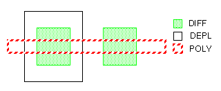

2
Writing Rules for Dracula
In this chapter, you’ll learn about the following:
- Writing Dracula Rules Files
- Writing DRC Checks
- Defining Devices
- Connecting Your Network
- Preparing To Use Dracula Interactive
Writing Dracula Rules Files
You write a Dracula rules file to verify designs in your specific process technology. Although your technology might be unique, it will have some features in common with similar technologies. The Dracula Reference contains many good examples of complete rules files for a variety of technologies and purposes. You can use these rules as guidelines when you write your own rules files.
Using Rules File Examples
For general design rule techniques, see
| Rules | Technology | Input format | Contents | Reference manual section |
|---|---|---|---|---|
|
Design rules for gate, depletion, external separation, enclosure, and metal reflection checks |
||||
|
|
||||
|
|
||||
|
Extracts vertical NPN and PNP transistors, lateral PNP transistors, Schottky diodes, metal-to-N+ capacitors, and |
|
|||
|
Extracts depletion and enhancement transistors, a parasitic diode, and parasitic capacitors |
|
|||
|
Extracts N-channel and P-channel transistors and parasitic diodes and capacitors |
|
|||
|
Extracts N-channel and P-channel transistors and parasitic diodes, resistors, and capacitors |
|
You might also want to refer to the following reference manual sectios on database conversion.
-
Database conversion
The “CONVERT-DATABASE” section in the “Description Block Commands” chapter contains rules files for the following database format conversion functions:
Techniques for Preparing Your Rules File
In this chapter, you will learn the following techniques for writing your rules file:
-
Writing DRC checks
Some design rule checks are similar in all process technologies. You can use “Writing DRC Checks” to learn how to write antenna checks, electromigration checks, and other types of checks you might need to make. -
Defining devices
The rules that you write to extract devices in your technology will probably be similar to the rules in the Dracula Reference. Each process technology can be unique, however, the Defining Devices section gives general information to guide you in extracting devices in your technology. -
Connecting your network
When you write rules to create a network in your design, you use theCONNECTandCONNECT-LAYERfunctions. You need to know how Dracula uses these functions to connect layers. For more information, see Connecting Your Network section. -
Preparing to use Dracula Interactive
If you are planning to use Dracula Interactive to view the results of your Dracula job, there are several prerequisites. See the “Preparing To Use Dracula Interactive” section for a list of requirements.
Writing DRC Checks
In this section, you’ll learn how to write the following types of checks:
- Antenna checks
- In-the-direction-of checks
- Exact size checks
- Electromigration checks
- Corner checks
- Edge checks
For examples of common checks, see the
Writing Antenna Checks
You use antenna checks to check each node for the area ratio of geometries on a given layer to devices on the same node. The area ratio of devices affects the drive current and transition time. An antenna check ensures that induced capacitance is under a certain value so that electrical characteristics stay stable.
The most common antenna check compares the ratio of field poly area to gate area on each input node. You can write similar checks that compare metal, diffusion, and contact layer area to gate area.
You can write an antenna check rules file without using the LPECHK, LVSCHK, or LPESELECT functions, which shortens the run time. The functions you might need for an antenna check are listed in the following table.
| Function | Description | Rules file block |
|---|---|---|
|
Lists the set of parameters that you want to extract, such as area and perimeter. |
||
|
Passes node information needed by |
||
|
Creates a layer that defines the parameters specified by |
||
|
Calculates the value and ratio of the geometric parameters you extract with |
||
|
Calculates the value and ratio of the geometric parameters you extract with |
||
|
Uses values calculated by a previous |
Extracting Area Ratios Using the COMPUTE Function
You use the COMPUTE function to compute values based on a criterion that you specify. The criterion can be MIN, MAX, SUM, or MINGATE. The CHKPAR function uses the values that COMPUTE extracts to report the data you select.
You use logical operations and LEXTRACT to prepare layers to use in COMPUTE, as shown in the following example.
;
; <functions omitted>
;
PARSET ANT AREA PERI
;
; <functions omitted>
;
NOT POLY GATE FPOLY ; field poly
STAMP GATE BY POLY
STAMP FPOLY BY POLY
LEXTRACT ANT GATE BY NODE XGATE
LEXTRACT ANT FPOLY BY NODE XFPOLY
Use the XGATE and XFPOLY layers in COMPUTE operations, as shown in the sections that follow.
Using the MIN Option
COMPUTE MIN XFPOLY XGATE ANTENNA
the MIN option uses the following equation:
The minimum node in the following figure has a ratio of 0.25. For this node, the minimum area for a separate region of XFPOLY is 4. The other regions are 6 and 32 (4 + 8 + 12 + 2 + 6).
If you use only one input parameter file, the COMPUTE MIN function calculates the value for each separate area. For example, the following COMPUTE function reports the minimum separate area for each node on the XFPOLY layer.
; <functions omitted>
PARSET ANT AREA
; <functions omitted>
LEXTRACT ANT FPOLY BY NODE XFPOLY
COMPUTE MIN XFPOLY ANTENNA
Using the MAX Option
COMPUTE MAX XFPOLY XGATE ANTENNA
the MAX option uses the following equation:
The maximum node in the figure has a ratio of 1.6.
If you use only one parameter file, the COMPUTE MAX function calculates the value for each separate area. For example, the following COMPUTE function reports the maximum separate area for each node on the XFPOLY layer.
; <functions omitted>
PARSET ANT AREA
; <functions omitted>
LEXTRACT ANT FPOLY BY NODE XFPOLY
COMPUTE MAX XFPOLY ANTENNA
Using the SUM Option
COMPUTE SUM XFPOLY XGATE ANTENNA
the SUM option uses the following equation:
The node in the figure has a ratio of 1.1666.
If you use only one parameter file, the COMPUTE SUM function calculates the value for each separate area. For example, the following COMPUTE function reports the sum of all XFPOLY areas for each node.
; <functions omitted>
PARSET ANT AREA
; <functions omitted>
LEXTRACT ANT FPOLY BY NODE XFPOLY
COMPUTE SUM XFPOLY ANTENNA
Using the MINGATE Option
You must create three input parameter files for the MINGATE option. For example
OR NGATE PGATE GATE
NOT POLY GATE FPOLY
STAMP PGATE BY POLY
STAMP NGATE BY POLY
STAMP FPOLY BY POLY
LEXTRACT ANT NGATE BY NODE XNGATE
LEXTRACT ANT PGATE BY NODE XPGATE
LEXTRACT ANT FPOLY BY NODE XFPOLY
COMPUTE MINGATE XFPOLY XNGATE XPGATE ANTENNA
the MINGATE option uses the following equation:
The node in the figure has a ratio of 1.8235.0
Extracting Area Ratios Using the CALCULATE Function
The CALCULATE function performs the same MIN, MAX, and SUM operations that COMPUTE does. This function also lets you specify detailed equations for ratio checking. The following example shows how you can extract several parameters, such as area and perimeter, and use them selectively with options such as MAX and SUM.
; <functions omitted>
PARSET ANT AREA PERI
; <functions omitted>
LEXTRACT ANT METAL1 BY NODE XMET1
LEXTRACT ANT METAL2 BY NODE XMET2
LEXTRACT ANT PGATE BY NODE XPGATE
LEXTRACT ANT NGATE BY NODE XNGATE
;
CALCULATE RATIO = (MAX.XNGATE.PERI + 0.1*SUM.XMET1.AREA + 0.5*MAX.XMET2.PERI)/MAX.XPGATE.AREA
For information about the CALCULATE function, see the
Sample Rules File
You can use the rules file in this section as a guide for writing antenna checks. This rules file checks poly to gate ratios as well as cumulative field poly-metal1 to gate ratios using the CALCULATE command.
*DESCRIPTION
;
; <functions omitted>
;
; Parameters for antenna checking
PARSET ANTE AREA
;
;<functions omitted>
;
*END
;
*INPUT-LAYER
pwell = 1
active = 2
poly = 3
pimplnt = 4
contact = 5
metal1 = 6
via = 7
metal2 = 8
TEXT = 30
SUBSTRATE = bulk 63
CONNECT-LAYER = nsub pwell nsd psd poly m1ant m2ant
*END
*OPERATION ;Create recognition layer and s/d terminals for MOS transistors AND pimplnt active pplus NOT active pplus nplus ANDNOT pplus poly pgate psd ANDNOT nplus poly ngate nsd NOT bulk pwell nsub AND psd pwell ptap AND nsd nsub ntap ;Create layers for antenna checking
OR ngate pgate gate
NOT poly gate fpoly
AND contact poly polycon
SELECT metal1 OVERLAP polycon m1ant
SELECT metal2 OVERLAP m1ant m2ant
;Define connectivity of the circuit CONNECT m2ant m1ant BY via
CONNECT m1ant poly BY contact
CONNECT m1ant nsd BY contact
CONNECT m1ant psd BY contact
SCONNECT nsd nsub BY ntap
SCONNECT psd pwell BY ptap
;Pass node information for antenna checking
STAMP gate BY poly
;
*BREAK ANTE
;Extract parameters for antenna checking LEXTRACT ANTE m2ant BY NODE xm2ant LEXTRACT ANTE m1ant BY NODE xm1ant
LEXTRACT ANTE gate BY NODE xgate
;Calculate the ratio of the sum of the metal1 to the sum of all gate ;areas CALCULATE parm1 = xm1ant.area / xgate.area
;Calculate the ratio of the sum of the metal2 to the sum of all gate ;areas CALCULATE parm2 = xm2ant.area / xgate.area
;Calculate the cumulative ratio of the sum of all the metal to the ;sum of all gate areas CALCULATE carme = (xm1ant.area+xm2ant.area) / xgate.area ;If the ratio of metal1 areas to gate areas is more than 2.5, ;output the gate geometries CHKPAR PAR parm1 gate GT 2.5 eme1 OUTPUT e1 63 ;If the ratio of metal2 areas to gate areas is more than 2.5, ;output the gate geometries CHKPAR PAR parm2 gate GT 2.5 eme2 OUTPUT e2 63 ;If the cumulative ratio of all the metal areas to gate areas is more ;than 2.5, output the gate geometries CHKPAR PAR carme gate GT 2.5 emet OUTPUT et 63
*END
Writing antenna rules using the drcAntenna macro
The drcAntenna macro was recently introduced into Dracula to make the task of writing antenna checks easier. In a nutshell, the macro is of the form:
drcAntenna(
gate( gate layer list )
antenna( antenna list )
diff( diffusion layer list )
parset( parset list )
check( antenna check list )
)
For a complete explanation of the macro syntax, please refer to the
The following example rewrites the previous Sample Rules File section using the drcAntenna macro:
*DESCRIPTION
;<functions omitted>
*END
*INPUT-LAYER
pwell = 1
active = 2
poly = 3
pimplnt = 4
contact = 5
metal1 = 6
via = 7
metal2 = 8
TEXT = 30
SUBSTRATE = bulk 63
CONNECT-LAYER = nsub pwell nsd psd poly metal1 metal2
*END
*OPERATION
;Create recognition layer and s/d terminals for MOS transistors
AND pimplnt active pplus
NOT active pplus nplus
ANDNOT pplus poly pgate psd
ANDNOT nplus poly ngate nsd
NOT bulk pwell nsub
AND psd pwell ptap
AND nsd nsub ntap
;Create layers for antenna checking
OR ngate pgate gate
;Define connectivity of the circuit
CONNECT metal2 metal1 BY via
CONNECT metal1 poly BY contact
CONNECT metal1 nsd BY contact
CONNECT metal1 psd BY contact
SCONNECT nsd nsub BY ntap
SCONNECT psd pwell BY ptap
*BREAK ANTE
drcAntenna(
gate ( gate poly )
antenna( metal1 metal2 )
diff ( psd nsd )
parset ( ANTE AREA )
check ( ( metal1 (CALC parme1 = metal1.AREA / gate.AREA)
(CHKPAR PAR parme1 gate GT 2.5 eme1 OUTPUT e1 63)
) ;end of metal1 check
( metal2 (CALC parme2 = metal2.AREA / gate.AREA)
(CALC carme = parme1 + parme2)
(CHKPAR PAR parme2 gate GT 2.5 eme2 OUTPUT e2 63)
(CHKPAR PAR carme gate GT 2.5 emet OUTPUT et 63)
) ;end of metal2 antenna check
) ;end of check function
) ;end of drcAntenna
*END
Writing In-the-Direction-Of Checks
You might need to check whether one layer encloses another layer by a certain dimension, but by a different dimension in the direction of a third layer. For example, poly must enclose contacts by 2 microns, but by 2.5 microns in the direction of metal (current).
You might also need to write a check for two layers, such as metal and contact, to check spacing in the direction of current.
Choosing the Direction
To write in-the-direction-of checks, you must first determine what the direction is. The following figure shows some possible in-the-direction-of cases.
The two cases on the left are straightforward, because the direction is toward the mass of the conductor layer. For the case on the right, you need to decide if the A or B distance warrants an in-the-direction-of check.
- If A is greater than a certain value, left becomes a valid direction.
-
If B is greater than a certain value, down becomes a valid direction.
Once you decide what the A and B values are, you can use them as the minimum spacing values in your in-the-direction-of checks.
Clipping Geometries
Some technologies allow clipping, while others do not. The shape on the left in the following figure is not clipped. The shape on the right is clipped.

If your technology does not allow clipping, you will need to write your basic check for minimum enclosure using the ENC[S] option.
Enclosure checks for designs that don’t allow clipping use the [S] option with the ENC function. The [S] option takes two measurements for every point between the two geometries. If both these measurements are less than the spacing you specify, Dracula reports an error.
When taking the measurements for the [S] option, Dracula checks the x,y value for each dimension. For example, point C,0 in the following figure measures C on the x axis and 0 on the y axis. Point 0,D measures 0 on the x axis and B on the y axis. If your enclosure value is 3, and both C and D are less than 3, Dracula reports an error.
For examples using the [S] option, see “Writing the Basic Check” section.
Writing the Basic Check
Always check the minimum distance around a contact first. For example, write the global check that metal encloses contacts by at least 1 micron in any direction. For example
; Minimum contact enclosure check, clipping allowed.
ENC CONTACT METAL1 LT 1 OUTPUT ERR 01
;
;Minimum contact enclosure check, clipping not allowed.
ENC[S] CONTACT METAL1 LT 1 OUTPUT ERR 02
;
; Minimum contact enclosure check, partial clipping allowed.
ENC[S] CONTACT METAL1 LT 1 CORNER-EDGE = .5 OUTPUT ERR 03
See Clipping Geometries for information about the ENC[S] function.
For Designs Where Clipping Is Allowed
If clipping is allowed in your design, and your contacts are all squares of the same size, you can use an in-the-direction-of check like this:
; In-The-Direction-Of Check.
; The minimum length of a portion of a contact edge at
; which a direction check is required = .4.
;
SIZE CONTACT BY 2 OCONT
NOT METAL1 OCONT NOCONT
EXT[P] CONTACT NOCONT LE 2 & ; get in-direction-of edges
LENGTH CONTACT GT .4 & ; find those of min. length
ENC[T] CONTACT CONTACT[O] LT .01 & ; select contact edges
ENC CONTACT METAL1 LT 2.5 OUTPUT ERR 04

For Designs Where Clipping Is Not Allowed
If clipping is not allowed in your design, use an in-the-direction-of check like this:
; In-The-Direction-Of Check
; The minimum length of a portion of a contact edge at
; which a direction check is required = .4,
; clipping not allowed.
;
SIZE CONTACT BY 2 OCONT
NOT METAL1 OCONT NOCONT
EXT[P] CONTACT NOCONT LE 2 &
LENGTH CONTACT GT .4 &
ENC[T] CONTACT CONTACT[O] LT .01 &
ENC[S] CONTACT METAL1 LT 2.5 OUTPUT ERR 05
This check is identical to the check where clipping is allowed, except that it uses ENC[S] rather than ENC. See the “Clipping Geometries” section for information about the ENC[S] function.
Writing Exact Contact Size Checks
You might need to check that all geometries are an exact size, such as ensuring that all contacts are exactly 2x2 or 1x4. The following rules file shows the technique you can use to check for exact contact size checks.
;
; <functions omitted>
;
*INPUT-LAYERS
contact = contact
*END
;
*OPERATION
; Contacts can be 1x4, 1x2 or 4x4 only.
; All others are violations.
;
; The WIDTH function will flag any acute angles.
;
; For 1x4 contacts:
;
; Find contacts with 1x4 area
AREA contact EQ 4 cont1x4
;
; Subtract these contacts from the other contacts
NOT contact cont1x4 contx
;
; Do width check for 1x4 contact, only checking those
; that fit the area constraints.
WIDTH cont1x4 LT 4 &
LENGTH cont1x4 LT 4 OUTPUT err1 63
;
; For 1x2 contacts, follow the same procedure using the
; remaining contacts available.
;
AREA contx EQ 2 cont1x2
NOT contx cont1x2 ocnts
WIDTH cont1x2 LT 2 &
LENGTH cont1x2 LT 2 OUTPUT err2 63
;
; For 4x4 contacts, using the contacts that are left.
;
AREA ocnts EQ 16 cont4x4
WIDTH cont4x4 LT 4 &
LENGTH cont4x4 LT 4 OUTPUT err3a 63
WIDTH cont4x4 LT 4 &
LENGTH cont4x4 GT 4 OUTPUT err3b 63
;
; Then output the remaining contacts that did not fit any
; of the previous constraints.
;
OR cont1x4 cont1x2 tmp
OR tmp cont4x4 okconts
NOT contact okconts badcont OUTPUT err4 63
*END
Writing Metal Reflection/ Crosstalk Checks
You can find a detailed discussion of metal-over-poly and metal-over-diffusion reflection checks in the
Writing Electromigration Checks
To locate areas of potential electromigration, you can use the following techniques in Dracula.
-
Gate approximation
You can use gate dimensions to determine the potential current, then use other layout dimensions to determine how much current the contacts can handle. -
Fuse extraction
You can use Dracula to extract a fuse network that represents areas of potential electromigration, then use your simulator to locate those areas.
Using Gate Approximation
The gate approximation method is based on these concepts:
- You can use gate dimensions to predict peak current.
- You can use diffusion contact dimensions to predict the amount of current the contacts can handle.
To locate potential electromigration, you compare peak currents from gate dimensions to the amount of current diffusion contacts can handle, based on contact dimensions. Electromigration occurs when drive current is greater than the current the diffusion contacts can handle.
The advantage to this method is that you can use it very early in the design cycle. However, it works only on localized problems. Also, this method can be used to predict only whether there is a potential for an electromigration problem.
You can look for possible electromigration problems by comparing one or more of the values on the left to one of the values on the right.
You can find examples of these techniques in the sections that follow.
The gate approximation method uses the COMPUTE SUM function. For a description of this function, see Extracting Area Ratios Using the COMPUTE Function.
Comparing Gate Width to Contact Area
The following rules file uses these elements in its electromigration equation:
-
Drive current
gate_width * current_value1
-
Current that the diffusion contacts can handle
contact_area * current_value2
The current values are values you supply, based on your process technology, with the CHKPAR function.
You look for possible electromigration problems in areas where
(gate_width*current_value1) > (contact_area*current_value2)
(gate_width/contact_area) > (current_value2/current_value1)
The rules file that follows extracts the gate width and contact area, computes the area ratio of gate width to contact area, and reports the areas where this ratio indicates that electromigration might be a problem.
*DESCRIPTION
;
; <functions omitted>
;
PARSET TST AREA
*END
*INPUT-LAYER
DIFF = DIFF
POLY = POLY
CONT = CON
;
CONNECT-LAYER = DIFCON SD GATEDG
*END
*OPERATION
NOT DIFF POLY SD
;
; Find source/drain contacts
AND CONT SD DIFCON
;
; Find gate/SD edges (gate width)
EXT[TR] POLY SD LT .1 GATEDG
;
; Set up contact layers
AND GATEDG SD GSD
;
; Connect gate/SD edges with SD contacts
CONNECT GATEDG SD BY GSD
CONNECT SD DIFCON BY CONT
;
; LEXTRACT doesn’t work unless there is at least one
; ELEMENT function in the rules file.
; These functions generate an empty device.
AND DIFCON GATEDG EMPTY
ELEMENT CAP EMPTY DIFCON GATEDG
PARAMETER CAP 1
;
; Extract GATEDG area, keeping the node information
LEXTRACT TST GATEDG BY NODE EDGEAR
;
; Extract contact area, keeping the node information
LEXTRACT TST DIFCON BY NODE CONTAR
;
; Compute (GATEDG area)/(DIFCON area) for each node
COMPUTE SUM EDGEAR CONTAR SUMAREA
;
; Output GATE/SD edges that have a ratio of 6/10 to 1/1
; for the (GATE/SD edge)/(DIFCON area)
CHKPAR PAR SUMAREA GATEDG RA 0.6 1 OUTPUT ERR 01
*END
Comparing Gate Width Sorted by Length to Contact Area
The following rules file uses these elements in its electromigration equation:
-
Drive current
(gate_width/gate_length) * current_value1
-
Current that the diffusion contacts can handle
contact_area * current_value2
You look for possible electromigration problems in areas where
(contact_area/gate_width/gate_length) > (current_value1/current_value2)
To find areas of possible electromigration problems, you can use a rules file like the example that follows, which extracts gate width for gates of different lengths. It extracts contact area, computes the area ratio of gate width to contact area, and reports the areas where the ratio indicates that electromigration might be a problem for each gate length.
*DESCRIPTION
; <functions omitted>
PARSET TST AREA
*END
*INPUT-LAYER
DIFF = DIFF
POLY = POLY
CONT = CON
CONNECT-LAYER = DIFCON SD GATEDG2 GATEDG1
*END
*OPERATION
;
; <functions omitted>
;
NOT DIFF POLY SD
AND DIFF POLY GATE
;
;------------------------------------------------
; Find gates of different sizes
EXT[R] SD LE 1 GLE1
EXT[R] SD RANGE 1 2.1 G1TO2
; Gates of length less than or equal to 1
AND GATE GLE1 GATE1
; Gates of length greater than 1 but less than
; or equal to 2
AND GATE G1TO2 GATE2
;------------------------------------------------
;
; Find gate/SD edges
EXT[TR] GATE1 SD LT .1 GATEDG1
EXT[TR] GATE2 SD LT .1 GATEDG2
;
; Set up contact layers
AND GATEDG1 SD GA1
AND GATEDG2 SD GA2
;
; Find source/drain contacts
AND CONT SD DIFCON
;
; Connect gate/SD edges with SD contacts
CONNECT GATEDG1 SD BY GA1
CONNECT GATEDG2 SD BY GA2
CONNECT SD DIFCON BY CONT
;
; LEXTRACT doesn’t work unless there is at least one
; ELEMENT function in the rules file.
; These functions generate an empty device.
AND DIFCON GATEDG1 EMPTY
ELEMENT CAP EMPTY DIFCON GATEDG1
PARAMETER CAP 1
;
; Extract GATEDG1 area, keeping the node information
LEXTRACT TST GATEDG1 BY NODE EDGARE1
; Extract GATEDG2 area, keeping the node information
LEXTRACT TST GATEDG2 BY NODE EDGARE2
; Extract contact area, keeping the node information
LEXTRACT TST DIFCON BY NODE CONTARE
;
; Compute (GATEDG area)/(DIFCON area) for each node
COMPUTE SUM EDGARE1 CONTARE SUMAR1
COMPUTE SUM EDGARE2 CONTARE SUMAR2
;
; Output gate/SD edges that have a ratio of 6/10 to
; 1/1 for (gate/SD edge)/(DIFCON area)
; For gate lengths LE 1
CHKPAR PAR SUMAR1 GATEDG1 RA .6 1 OUTPUT ERR 01
; For gate lengths GT 1 & LE 2
CHKPAR PAR SUMAR2 GATEDG2 RA .6 1 OUTPUT ERR 02
;
*END
Comparing Gate Width Sorted by Number of Gates in Series to Contact Area
The following rules file uses these elements in its electromigration equation:
-
Drive current
(gate_width/number_of_gates) * current_value1
-
Current that the diffusion contacts can handle
contact_area * current_value2
You look for possible electromigration problems in areas where
(contact_area/gate_width/number_of_gates) > (current_value1/current_value2)
If you want to sort the gate width information according to whether the gate is single or serial, you can use the rules file in Comparing Gate Width Sorted by Length to Contact Area. You need to replace some lines in this rules file to sort gate widths by single or serial gates.
;------------------------------------------------
; Find gates of different sizes
EXT[R] SD LE 1 GLE1
EXT[R] SD RANGE 1 2.1 G1TO2
; Gates of length less than or equal to 1
AND GATE GLE1 GATE1
; Gates of length >1 but less than or equal to 2
AND GATE G1TO2 GATE2
;------------------------------------------------
;------------------------------------------------
; Find diffusion that contains only one gate
SELECT DIFF ENCLOSE[1:1] GATE DIFF1
; Find diffusion that contains two devices in series
SELECT DIFF ENCLOSE[2:2] GATE DIFF2
; Find gates that are not in series
AND DIFF1 GATE GATE1
; Find gates that are in series with only one other device
AND DIFF2 GATE GATE2
;------------------------------------------------
Comparing Gate Width to Contact Perimeter
The following rules file uses these elements in its electromigration equation:
-
Drive current
gate_width * current_value1
-
The current that the diffusion contacts can handle
contact_perimeter * current_value2
You look for possible electromigration problems in areas where
(gate_width/contact_perimeter) > (current_value2/current_value1)
To find areas of possible electromigration problems, you can use a rules file like the example that follows, which extracts gate width and contact perimeter. It computes the area ratio of gate width to contact perimeter, and reports the areas where this ratio indicates that electromigration might be a problem.
Although the parameter set in this rules file extracts only area, the perimeter of the contacts is obtained using the EXT function. First, contacts are removed from the source/drain diffusion to create the NOCON layer, shown in the following figure. Then an EXT function using the Region and Touch options creates regions around the edges where the contacts touch the diffusion. These regions, which are one resolution unit wide, represent the perimeter of the contact.
*DESCRIPTION
;
; <functions omitted>
;
PARSET TST AREA
*END
*INPUT-LAYER
DIFF = DIFF
POLY = POLY
CONT = CON
CONNECT-LAYER = DIFCON SD GATEDG
*END
*OPERATION
NOT DIFF POLY SD
;
; Find source/drain contacts
NOT SD CONT NOCON
EXT[RT] CONT NOCON LT .1 DIFCON
;
; Find gate/SD edges (gate width)
EXT[TR] POLY SD LT .1 GATEDG
;
; Set up contact layers
AND GATEDG SD GSD
AND DIFCON SD SDCON
;
; Connect gate/SD edges with SD contacts
CONNECT SD DIFCON BY SDCON
;
; LEXTRACT doesn’t work unless there is at least one
; ELEMENT function in the rules file.
; These functions generate an empty device.
AND DIFCON GATEDG EMPTY
ELEMENT CAP EMPTY DIFCON GATEDG
PARAMETER CAP 1
;
; Extract GATEDG area, keeping the node information
LEXTRACT TST GATEDG BY NODE EDGEAR
;
; Extract contact perimeter, keeping the node information
LEXTRACT TST DIFCON BY NODE CONTPR
;
; Compute (GATEDG area)/(DIFCON perimeter) for each node
COMPUTE SUM EDGEAR CONTPR SUMAREA
;
; Output GATE/SD edges that have a ratio of 2 to 3
; for the (GATE/SD edge)/(DIFCON perimeter)
CHKPAR PAR SUMAREA GATEDG RA 2 3 OUTPUT ERR 01
*END
Using Fuse Extraction
The fuse extraction method is based on the concept that electromigration problems are potential fuses. You can extract a network of these electromigration fuses and use it as input to a simulator. To predict when the fuses will pop, you use a nonstandard set of equations to develop the proper stimulus pattern and models for the simulation.
This method can be very accurate at locating electromigration effects throughout the chip. However, to find the electromigration problems, you need to have a simulator that can handle the fuse network, and you must supply the correct stimulus.
The following rules file extracts fuses as parasitic resistors and diodes.
*DESCRIPTION
;
; <functions omitted>
;
MODEL = MOS[N],NMOS MOS[P],PMOS DIO[N],NDIO DIO[PS],PSDIO
MODEL = DIO[PW],PWDIO DIO[BE],BEDIO DIO[BF],BFDIO
MODEL = DIO[BG],BGDIO
UNIT = CAPACITANCE,PF AREA,P PERIMETER,U RESISTENCE,U
PARSET CRAR W1 W2 W R
;
; <functions omitted>
;
*END
*INPUT-LAYER
PWELL = 1
DIFF = 2
PIMP = 4
POLY = 3
CONT = 5
MET = 6 TEXT = 30
VAPOX = 7
;
CONNECT-LAYER = BULK PWELL NSD PSD POLY MET
RCONNECT-LAYER = BULK PWELL NSD PSD POLY SMET TPMET
;
SUBSTRATE = BULK 50
;
PAD-LAYER = VAPOX
*END
*OPERATION
AND DIFF POLY GATE
NOT DIFF POLY SD
;
AND GATE PIMP PGATE
NOT GATE PIMP NGATE
;
AND SD PIMP PSD
NOT SD PIMP NSD
;
AND PSD PWELL PCONT
NOT NSD PWELL NCONT
;
CONNECT MET POLY BY CONT
CONNECT MET PSD BY CONT
CONNECT MET NSD BY CONT
CONNECT PSD PWELL BY PCONT
CONNECT NSD BULK BY NCONT
;
;Extract elements
ELEMENT MOS[P] PGATE POLY PSD BULK
ELEMENT MOS[N] NGATE POLY NSD PWELL
;
LPECHK
;
; Find the metal that carries power
SELECT MET LABEL VDD METPWR
;
; Find the metal that carries ground
SELECT MET LABEL VSS METGND
;
; Find the metal that carries power/ground
OR METPWR METGND PMET
;
; Find the metal that is not carrying power/ground
NOT MET PMET SMET
;
; Create the resistor bodies
CUT-TERM PMET CONT RPMET RSTRM MAXWIDTH=100
;
; Transfer nodal information to resistor terminals
AND MET RSTRM TPMET
;
; Build an empty layer for changing the power/ground
; contacts into fuses
NOT PWELL BULK BCC
;
RCONNECT TPMET POLY BY BCC
RCONNECT TPMET PSD BY BCC
RCONNECT TPMET NSD BY BCC
RCONNECT SMET POLY BY CONT
RCONNECT SMET PSD BY CONT
RCONNECT SMET NSD BY CONT
RCONNECT PSD PWELL BY PCONT
RCONNECT NSD BULK BY NCONT
;
; <functions omitted>
;
; P-well to N source/drain
AND NSD PWELL PWNSD
; P source/drain to substrate
NOT PSD PWELL BUPSD
;
; Set up contact resistors as diodes
AND TPMET CONT PGCONT ; contacts to power/ground
AND PGCONT POLY TPMP ; metal/poly power/ground contacts
NOT TPMET POLY NTPMP
AND NTPMP PSD TPMS ; p/g contacts to P source/drain
AND NTPMP NSD TPMD ; p/g contacts to N source/drain
;
; <functions omitted>
;
;Extract parasitic devices
PARASITIC DIO[N] PWNSD PWELL PWNSD
PARASITIC DIO[PS] BUPSD BUPSD BULK
PARASITIC DIO[PW] PWELL PWELL BULK
;
PARASITIC RES[M] RPMET TPMET ; power/ground metal res.
ATTRIBUTE RES[M] .01
;
; <functions omitted>
;
PARASITIC DIO[BE] TPMP TPMP POLY
PARASITIC DIO[BF] TPMS TPMS PSD
PARASITIC DIO[BG] TPMD TPMD NSD
;
; Build the netlist.
;
; <functions omitted>
;
LPESELECT[YS] DIO &
; <functions omitted>
LPESELECT[YWS] RES OUTPUT SPICE
;
*END
Writing Corner Checks
You can locate internal or external corners of a geometry and generate rectangles at the corner locations to flag the angles.
For example, you might want to find all internal corners of a layer and place a 2x2-unit square above this internal corner.
To do this, use the following function:
CORNER[A] inputlayer OUTSIDE INNER CORNER-SIZE 2 outlayer

For more information on the CORNER function, see
Writing Edge Checks
You write edge checks when you want to examine only the edge of a shape, rather than the full shape. You can use two Dracula features to check edges:
-
Region options
When you need to see a portion of an edge rather than the full edge, use the region options,RandR', of theEXT,INT,ENC, andWIDTHspacing functions. -
Conjunctive rules
When you need to see the whole edge, use conjunctive rules.
Converting Error Flags into Trapezoids
When you do spacing checks, you can use the R and R' region options to convert error flags into trapezoids that Dracula can manipulate. These trapezoids represent edges that can be used in other Dracula functions.
The R' option builds trapezoids using error edges flagged by the spacing check. The trapezoids are one resolution unit wide and extend along the length of the error flag. The red areas in the figure show the trapezoids created by the R' option for an enclosure check.
You can size trapezoids created by the WIDTH[R'], EXT[R'], and ENC[R'] functions using
WIDTH[R'] MET1 LT 2.1 ERR1
SIZE[L] ERR1 BY 0.6 ERR11
EXT[R'] POLY MET1 LT 2.1 ERR2
SIZE[B] ERR2 BY 0.15 ERR22
ENC[R'] MET1 POLY LT 1.5 ERR3
SIZE[L] ERR3 BY 0.6 ERR33
Using Conjunctive Rules
Unlike the R' option, which flags just a portion of an edge, conjunctive rules work on a complete edge.
Keep in mind that when you include the LENGTH function in a conjunctive rule, the input to LENGTH always contains only the error portions of the edge. Dracula expands the edges to full length for input to other functions in the conjunctive rule. Using edge portions for input to LENGTH prevents false errors in reflection rules, as shown in the following example. This reflection rule specifies that metal lines can be 5 microns apart, as long as they are no more than 100 microns long.
EXT METAL LT 5 &
LENGTH METAL GT 100 OUTPUT ERR 06
For this rule, the error portion must be greater than 100 microns, not the entire edge. If the entire edge was used for the length check, edges with correct spacing for a portion of the length would be flagged incorrectly.
Converting Full Edges to Edge Portions
To convert full edges to the partial edges that you obtained using the R or R' option, use the following syntax at the end of your conjunctive commands:
ENC[TR'] layer1 layer1[O] LT resolution output
Converting Edge Portions to Full Edges
To convert the partial edges that you obtained using the R or R' option to full edges, use the following syntax:
ENC[T] layer1 layer2 LT resolution &
where either layer1 or layer2 is generated by an R' check or derived from a layer generated by an R' check.
Measuring Edge Length
You can measure the length of a series of connected edges using the following combination of Dracula functions:
The value you use with the spacing check must be less than the value you specify for the RESOLUTION in the Description block. The following example measures all gate widths, including bent gates.
ENC[TR] gate poly LT .001 gatewd
PLENGTH gatewd RANGE 0 4 OUTPUT gatewd 24
Flagging Angles
You might need to flag corners based upon the angle that two edges make forming the corner. Dracula provides several ways to flag corners:
-
CORNERfunction
For an example of an inside corner check, see the “Writing Corner Checks” section. -
SIZE,ENC, andNOTfunctions
For more information, see the
You can use a combination of SIZE, ENC, and NOT functions as follows to create different shapes at the corners based on the corner types.
;
; Make a ten-resolution-unit-wide border
; around each shape
SIZE layer BY 10*resolution SUB01
;
; Create corner markers
ENC[RC] layer SUB01 LT 11*resolution SUB02
NOT SUB01 layer SUB03
NOT SUB03 SUB02 MARKER
Because the markers at 45-degree angles are a different shape than markers at 90-degree angles, for example, they have different area values. You can use the AREA function to filter the different angles.
Defining Devices
Before you start writing device extraction rules, you might want to plan your device definitions according to these guidelines:
-
Use cross-sections of devices to identify the components.
You can visualize devices more easily with drawings. Use flat or cross-sectional drawings of the devices in your technology to identify the component layers. A sample layout containing all the device types is also useful for this purpose. -
Identify the geometric attribute that makes the device unique.
You must create a unique recognition region for a device so that Dracula can identify that device. The geometry of the region is important, because it must touch or overlap the terminals of the device.
For example, the unique identifying feature for NMOS transistors is the depletion mask:AND POLY DIFF GBC gates and buried contacts NOT GBC BCONT GATE AND GATE DEPL DGATE; with depletion: depletion gates NOT GATE DGATE EGATE; no depletion: enhancement gates ; <functions omitted> ELEMENT MOS[D] DGATE POLY SRCDRN ELEMENT MOS[E] EGATE POLY SRCDRN
 -
Consider which device component to use for the recognition region.
For bipolar technologies, for example, if you want to have a multi-emitter device recognized as a single device rather than several devices, use the emitter as the recognition region.
The following example works for multi-emitter devices:NOT sp sn cheese; shallow P NOT shallow N SELECT sn HOLE cheese enpn ; ; <functions omitted> ; ; device collector base emitter ; ------ --------- ---- ------- ELEMENT BJT[N] enpn buried pplus enpn
-
Consider how Dracula will use the device definition.
For a bipolar multi-emitter device, if you want LVS to match a two-emitter device in the schematic with a two-emitter device in the layout, rather than with two one-emitter devices, define the emitter layer as the recognition layer. -
Understand the electrical interaction of all layers.
Make sure that electrical connectivity is established on all of the terminal layers. UseCONNECTorSCONNECTto make the electrical connection, particularly for ERC applications.
Connecting Your Network
When you write rules to create a network in your design, you need to use the CONNECT and CONNECT-LAYER functions. In this section, you’ll learn how Dracula uses these functions to connect layers and how to avoid problems when using the connect functions.
Determining the Master Layer
When you write a CONNECT function, you can connect only from a master layer to another layer for each type of contact.
Dracula determines what the master layer is for each contact layer you specify in your rules file. Of all the layers you use in CONNECT functions for a certain contact type, Dracula selects as the master layer the layer highest in the CONNECT-LAYER function. For example, in the following rules the CONTACT layer connects METAL, POLY, PSD, and NSD. Of these four layers, METAL is the highest layer specified with CONNECT-LAYER, so Dracula chooses METAL as the master layer.
CONNECT-LAYER = NSUB PWELL NSD PSD POLY METAL
;
; <functions omitted>
;
CONNECT METAL POLY BY CONTACT
CONNECT METAL PSD BY CONTACT
CONNECT METAL NSD BY CONTACT
If you also include the following line, however, Dracula does not make the connection.
CONNECT PSD PWELL BY CONTACT
Dracula connects only from the master layer of a contact to another layer, and PWELL is not the master layer for CONTACT. Dracula does not print a message that no connections have been made between PWELL and PSD.
Connecting Multiple Layers
In Dracula, you can connect two layers only with a contact layer. You might have features on your layout that Dracula handles by dividing the contact because of this rule.
-
Contact overlapping multiple layers
If your layout has contacts that overlap multiple layers, Dracula cuts the contact. For example, the contact in the following figure is completely covered by metal, but overlaps both pdiff and ndiff. Dracula divides this contact into two contacts that connect metal to pdiff and metal to ndiff.
In the next example, pdiff is not connected to anything. The contact is divided. The portion of the contact that overlaps pdiff does not overlap the master layer, which is metal, so Dracula does not make a connection.
The contact does not connect the two diffusions. However, the nodal information is passed through the metal connection. -
Intervening layers
If your layout has a layer intervening between twoCONNECTlayers, Dracula cannot connect the layers you specify. In the following example, the DIFF layer prevents the METAL-PWELL connection.CONNECT-LAYER = PWELL DIFF METAL ; ; <functions omitted> ; CONNECT METAL PWELL BY CONTACT
Preparing To Use Dracula Interactive
If you plan to use Dracula Interactive to view the results of your Dracula job, follow these steps:
-
Put
KEEPDATA = DRACULAINTERACTIVEin the Description block of your Dracula rules file.You need to include this command only if you want to useKEEPDATAto minimize the data on the disk, but you want Dracula to keep enough information to display results in Dracula Interactive. (For more information on theKEEPDATAcommand, see the “KEEPDATA” command section in Chapter 11 of the Dracula Reference). -
To associate comments with an output layer, put them at the end of the line that generates that layer in the Operation block.
The comment must be on the same line that generates the layer, following a semicolon. If you need additional lines for the comment, start each one with two semicolons. For exampleENC[R'] MET1 POLY LT 1.5 ERR3 ; metal enclosed by poly ;; LT 1.5
-
Use the
htvfunction when you run LOGLVS.
Thehtvfunction tells LOGLVS to generate Dracula Interactive files that let you cross-probe your design. - In Dracula interactive debugging tool, generate the comments file and turn on the comments display.
Return to top